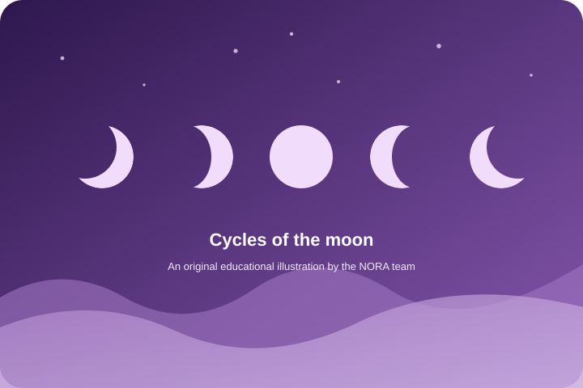
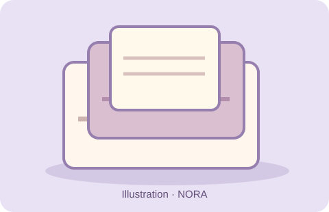
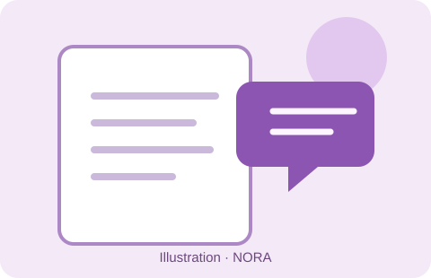
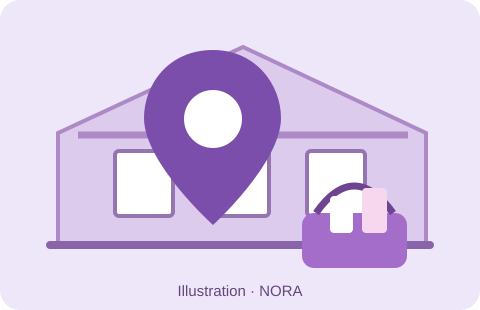

SAIT BBA CAPSTONE · PROPOSED PILOT
You know where to find it. Period.
NORA is a proposed system designed to make period supplies easier to find, access, and manage—through designated washroom baskets, inventory monitoring, and an online campus map.
EXPLORE THE PROTOTYPE
Find a building. See the idea.
Explore how the NORA website could help students find participating washrooms and view example product availability. Select a building card or map pin to see details.
Prototype notice: Locations, washroom access points, and inventory are demonstrations only. NORA baskets are not confirmed to be installed at SAIT; building photos are references, not proof of availability.
Campus map preview
Select a marker to expand its matching building card.
PERIOD 101
4 phases. 1 beautiful cycle.
The menstrual cycle is a natural process that prepares the body for a possible pregnancy. It often lasts about 21–35 days, although individual cycles vary.
4 phases
one cycle
one cycle
The diagram is illustrative, not a fixed calendar. Cycle lengths and ovulation timing differ between people.
PERIOD PRODUCTS
Different bodies. Different needs.
There is no one “right” product for everyone. Explore common options from the NORA brochure.

Pads
Absorbent products that attach to underwear. Available in different sizes, lengths, and absorbencies, including overnight and winged styles.

Tampons
Small absorbent products inserted into the vagina, offered in different absorbencies with or without applicators.
Photo: Kaldari · Wikimedia Commons · CC0 1.0

Menstrual cups
Reusable flexible cups that collect menstrual flow and can last for years with proper care.
Photo: Vulvani · Wikimedia Commons · CC BY-SA 4.0

Period underwear
Reusable underwear with built-in absorbent layers, worn on its own or as backup depending on flow.
Photo: Vulvani · Wikimedia Commons · CC BY-SA 4.0
Educational overview adapted from the NORA capstone brochure. If you have health concerns or symptoms that interfere with daily life, seek guidance from a qualified healthcare professional.
PERIODS THROUGH TIME
Moon Time, menstrual history, and Canada
Menstrual care has never been only about products. Culture, knowledge, community, and access have all shaped how people experience periods.

INDIGENOUS TEACHINGS
Moon Time: knowledge, respect, and community
In some First Nations and Métis communities, menstruation is called Moon Time and may be understood through teachings about renewal, rest, and respect for the body. Traditions and protocols vary across Nations, families, and individuals; they are living practices, not only history.
For example, an Ojibwe account shared by Indigenous Dance describes Elders supporting girls through a first-menstruation ceremony and passing on teachings about care and community responsibility.
Before modern period products

Long before adhesive pads and disposable products became widely sold, reusable absorbent cloth was one approach to menstrual care. Later inventions such as sanitary belts secured homemade or manufactured pads. The Smithsonian's Menstrual History Collection documents these changes mainly through North American and European objects.
Smithsonian · History of menstrual padsSmithsonian · Menstrual clothing and belts
Indigenous perspectives in Canada
The Native Women's Association of Canada's caregiver toolkit describes the importance of family- and Nation-specific coming-of-age teachings. In some communities, menstruation is called Moon Time and may be understood as a meaningful transition. The Kwek Society shares publicly offered teachings about menstruation from several Indigenous communities.
Practices and teachings are not universal across First Nations, Inuit, and Métis communities. We use a general moon illustration rather than a photograph of a ceremony or an Elder without permission.
Menstrual experiences across cultures
Explore real menstrual products sold in different markets and the conversations surrounding menstrual care. These are documented product examples, not claims that everyone in a country uses the same items.

01 / 03 · PHILIPPINES
Philippines: formats for different flows
Modess Philippines markets disposable pads in regular, maxi and overnight formats. This photographed regular, winged pack is one example sold through a Philippine retailer. Product sizes, absorbencies and packaging help shoppers distinguish options.
Access lens: Choices on store shelves matter, but availability, affordability and where products are distributed matter too.

02 / 03 · IRAN
Iran: local products and visibility
Panberes, an Iranian personal-care brand, lists multiple types of sanitary pads and describes menstrual-health education as part of its work. The pictured Promax Soft package is a real example of local product branding, not a representation of all Iranian consumers.
Access lens: A local brand can combine product distribution with awareness and education—two needs NORA also hopes to address.


03 / 03 · CANADA
Canada: product choice meets menstrual equity
Canadian retailers carry disposable pads and tampons in different formats, including the bilingual packages pictured here. Other menstrual products include reusable cups and underwear.
Access lens: Even when a product exists in the market, price, physical accessibility and stigma can prevent people from getting what they need. NORA explores a campus-level response, not a replacement for wider policy.
Sources & image referencesGovernment of Canada · Menstrual equityReal Canadian Superstore · PadsLondon Drugs · Tampons
Philippines · Slide 1 of 3
Images load from their credited retailer or manufacturer websites and may be unavailable if those sites change. Product photography is provided for educational identification, not endorsement or proof of which products all people in a country use.
Colonization, stigma, and knowledge

Colonial institutions disrupted the transmission of Indigenous languages, cultural knowledge, and health teachings. Today, Indigenous healthcare research also highlights continuing barriers to culturally safe care, including systemic racism and unequal access.
NORA presents Indigenous perspectives as living, diverse teachings and links students to the organizations that share them directly rather than treating them as a single historical practice.
Menstrual equity in Canada today

Today, menstrual equity in Canada involves affordability, reliable access to products, safe facilities, education, and freedom from stigma. NORA explores how proposed campus baskets and a location finder might make access easier to understand and plan.
Cultural teachings are specific to their communities. These summaries link to publicly shared materials; images of ceremonies or Elders are not reproduced without explicit permission.
MEET NORA
Meet NORA: access, awareness, and care.
NORA is a proposed modular system to make personal-care supplies easier to find, access, and manage. Three connected concepts demonstrate how a basket-based pilot could work at SAIT.
Basket prototype
A designated access point for period products in selected washrooms. Sensor assistance is a future concept, not an installed feature.
Inventory and restocking
A prototype dashboard simulates stock levels, shortages, and refill priorities so the team can explore an operating model.
Product locator website
A searchable campus map lets students explore proposed basket locations and sample product availability.
MENSTRUAL EQUITY & PERIOD POVERTY
Access should be stigma-free.
Period poverty means not having reliable access to menstrual products. Financial barriers, stigma, and limited resources can make that harder.
Canadians who menstruate have experienced period poverty.
Government of Canada · 2023 surveyOf Canadian women under age 25 surveyed in 2018 reported struggling to afford menstrual products.
University of Waterloo · Reporting Plan International CanadaOf Canadian women under age 25 surveyed reported missing school or work, or withdrawing from social activities, because of their period.
University of Waterloo · 2018 survey summaryThe 1 in 6 figure is from Women and Gender Equality Canada's 2023 survey. The 33% and 70% figures describe Canadian women under age 25 in a 2018 Plan International Canada survey, as summarized by the University of Waterloo; they are not SAIT-specific findings.
NORA aims to explore menstrual equity on campus, encourage open conversations, and support a more inclusive community. Whether you menstruate or support someone who does, this affects all of us.
Explore the proposed locationsINSTITUTIONAL VALUE · PROPOSED PILOT
Designed to help students. Built to fit existing operations.
NORA's business case is a staged, low-disruption menstrual-access pilot—not a request for immediate campus-wide infrastructure. The model starts with ordinary baskets, a clearly assigned refill routine, and simple measurements before expanding.
Lightweight to start
Baskets and basic supplies would be simpler to introduce than powered dispensers. No new permanent equipment is required for the proposed first phase, subject to facilities approval.
Minimal disruption by design
Restocking could be aligned with an existing facilities or cleaning workflow if SAIT agrees. Clear ownership, small reserve stock and a regular check reduce ad hoc work; actual labour still needs testing.
Measurable before scaling
A limited number of trial locations makes it possible to assess demand, refill frequency, empty-basket incidents, product cost and student awareness before committing more resources.
Modular and reusable
The locator, inventory categories and refill-planning logic could later be adapted for other campus essentials or locations, provided each new use case meets privacy, safety and institutional policies.
A practical rollout
- Choose and approve a few pilot sites
- Assign a refill owner and reserve supply
- Measure usage and staff time
- Improve or expand only if evidence supports it
Operational burden, costs, permissions and savings remain hypotheses to validate with SAIT. The inventory dashboard currently demonstrates a simulated workflow; it is not an installed monitoring system.
Built for a SAIT business capstone.
Developed by the NORA team for our SAIT Bachelor of Business Administration capstone. This student-developed proposal explores future menstrual access and operating requirements at SAIT.
THE PEOPLE BEHIND NORA
Meet the NORA Team
Five Bachelor of Business Administration students at SAIT developing a research-informed proposal for more visible, practical menstrual product access.
Ayah Barahim
SAIT BBA Capstone Team
Hannah Dietz
SAIT BBA Capstone Team
Harveer Gill
SAIT BBA Capstone Team
Jeeanne Marie Garcia
SAIT BBA Capstone Team
Mashael Memon
SAIT BBA Capstone Team
Member portraits and individual project contributions can be added with each person's permission. Initials are used for now.
WITH THANKS
Mentors & Acknowledgements
We are grateful to the educators and contributors who shared guidance, experience, and practical insights as NORA took shape.
SAIT · FACULTY
Chantelle LaMotte
Capstone professor, MNGT 4990, SAIT.
INDUSTRY MENTOR
Sarah Itani
Industry mentor whose feedback informed NORA's scope, feasibility considerations, and proposed pilot approach.
UNIVERSITY OF CALGARY · CUMMING SCHOOL OF MEDICINE
Sharon Litton
Student Affairs and Wellness Hub contributor who helped connect the team with experience from an existing menstrual-product initiative.
UNIVERSITY OF CALGARY · CUMMING SCHOOL OF MEDICINE
Jessica Ferguson
Program Coordinator, Student Affairs and Wellness Hub; shared operational information on product distribution and restocking.
UNIVERSITY OF CALGARY · PROJECT GUIDANCE
Heshini
Contributor to the University of Calgary menstrual initiative who was introduced to the NORA team for additional operational perspective.
Acknowledgement recognizes advice and information shared, not formal sponsorship, approval, or endorsement of NORA by SAIT or the University of Calgary.
RESEARCH & EVIDENCE
References & Resources
These sources support the NORA interim consulting report and educational website. They include research, institutional examples, product catalogues, and public Indigenous-led educational materials.
Student well-being and equity
- University of Waterloo. (n.d.). Background: Menstrual equity report.
Source for the 2018 Plan International Canada survey results for women under 25, reported by Waterloo.
- Women and Gender Equality Canada. (2025, May 15). Beyond the pad: The real price of period poverty in Canada.
Canadian menstrual equity and period poverty.
- Musulin, C., Yeshitila, N., & Harper, J. (2025). Periods and well-being: A focus group study to discuss how menstruation affects the well-being of women aged 18–40. Women's Health, 21, 1–20.
Peer-reviewed well-being study cited in the interim consulting report.
Policy and implementation
- Employment and Social Development Canada. (2023, December 15). Menstrual products now available at no cost to employees in federally regulated workplaces.
Federal workplace example; not an assertion that this requirement applies to SAIT.
- Women and Gender Equality Canada. Menstrual Equity Fund.
National pilot program and operational context.
- University of Calgary, Cumming School of Medicine. Menstrual Care Product Initiative.
Public description of the Foothills campus menstrual product initiative.
Indigenous knowledge and cultural context
- Native Women's Association of Canada. Culturally Safe Parent and Caregiver Starter Toolkit.
Publicly shared material on Nation- and family-specific teachings.
- Indigenous Dance. Ojibwe: Our Dance Myths and Stories.
A specifically attributed public account of Moon Time.
- The Kwek Society. Traditional Teachings.
Indigenous menstrual teachings and stories shared for public education.
- Public Health Agency of Canada. (2024). Healthcare for Indigenous Women.
Canadian access and culturally safe healthcare context.
Menstrual product history and international examples
- Smithsonian National Museum of American History. Menstrual History Collection.
Period-product and advertising history.
- Modess Philippines. Official product catalogue.
Philippines country slideshow product examples.
- Panberes Iran. Our story and official products.
Iran country slideshow example.
- UNICEF Nepal. Analysis of menstrual hygiene practices in Nepal.
International menstrual practices discussed in the history section.
Image Credits
NORA flower artwork and history illustrations were produced for this prototype. The Period 101 product photography is credited to its Wikimedia Commons creators and licence links directly beneath each image. The country slideshow displays third-party product photographs with source links in each slide. Building images have credits or are marked as placeholders on the Find Products cards.
References are linked for transparency. External photos and brands remain the property of their respective owners. Academic source formatting should be checked against the team's final submitted bibliography.